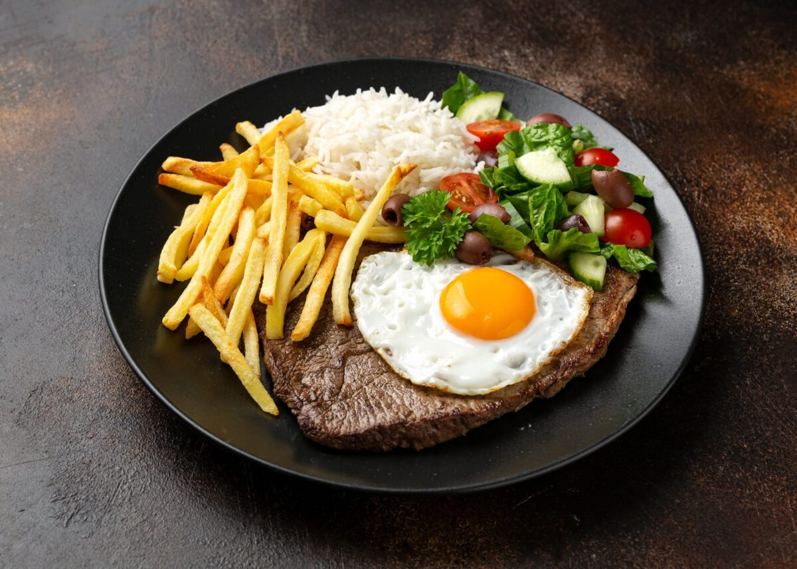

O corpo humano necessita de comida para a sua sobrevivência, no entanto, há comidas que gostamos mais do que outras.
Segue-se uma lista ordenada das minhas favoritas:
Aqui está uma imagem da minha comida preferida - BITOQUE

Carregue aqui para ver a receita